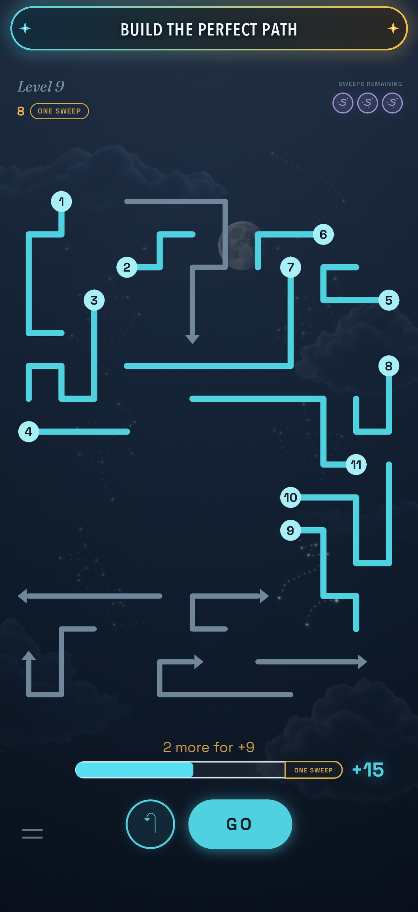
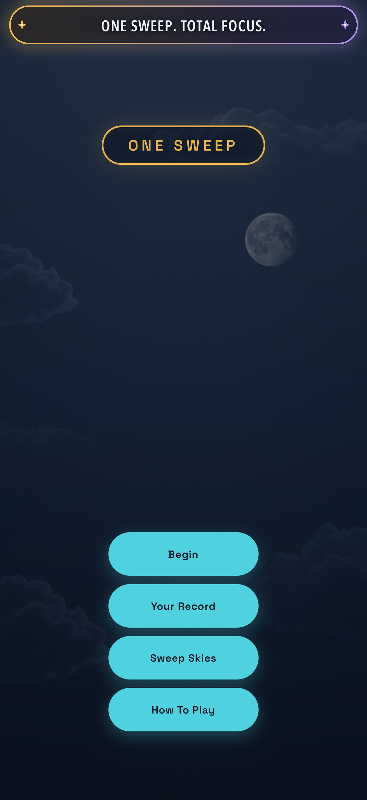
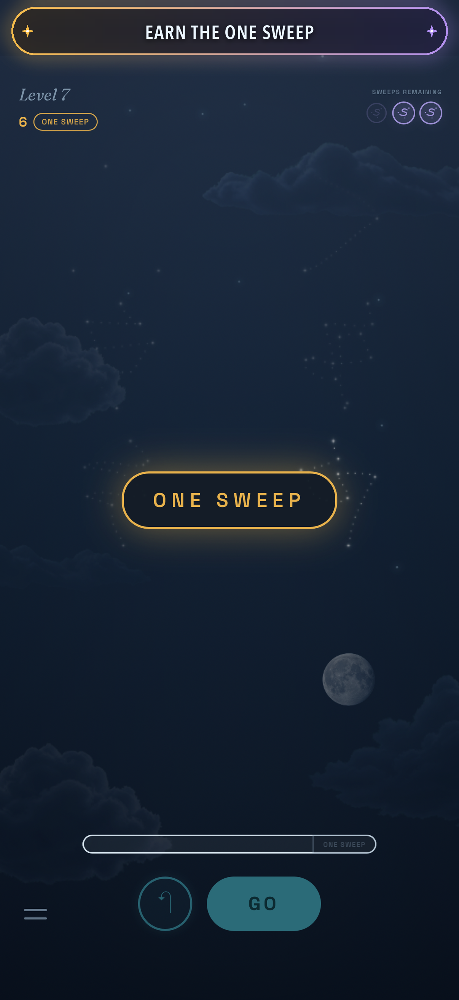
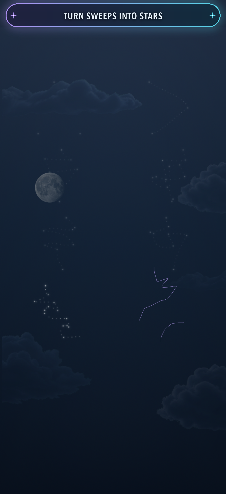
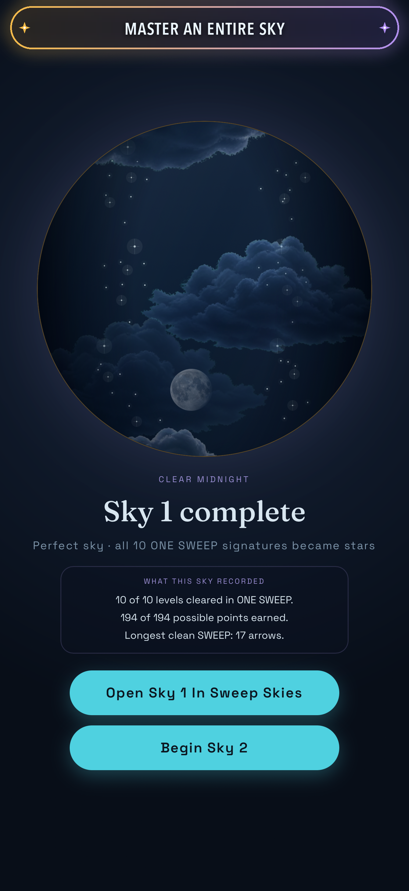
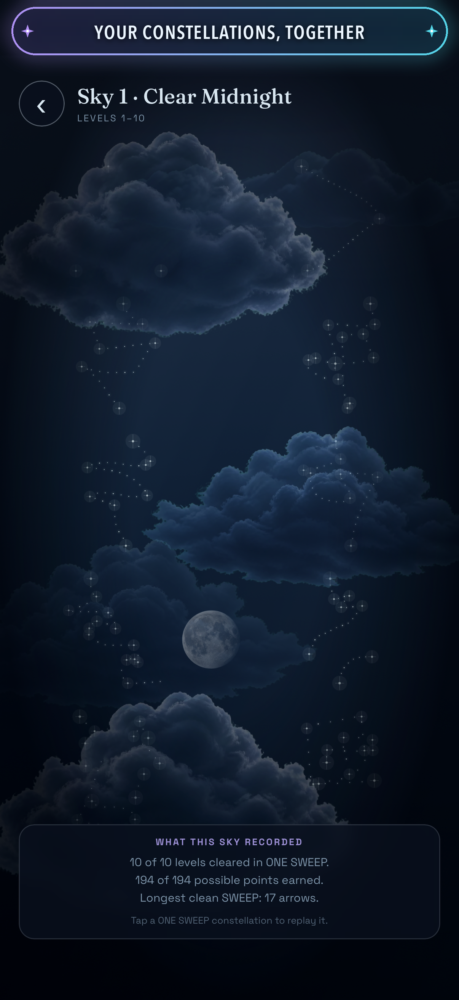
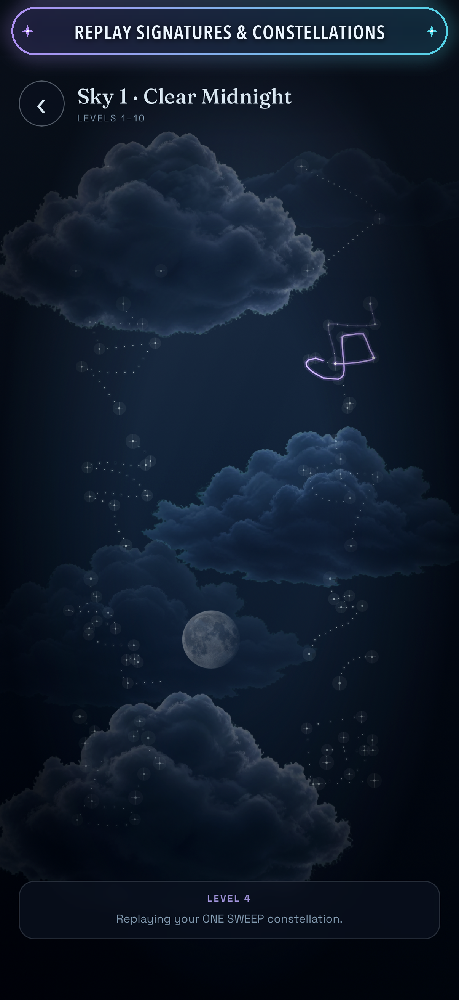
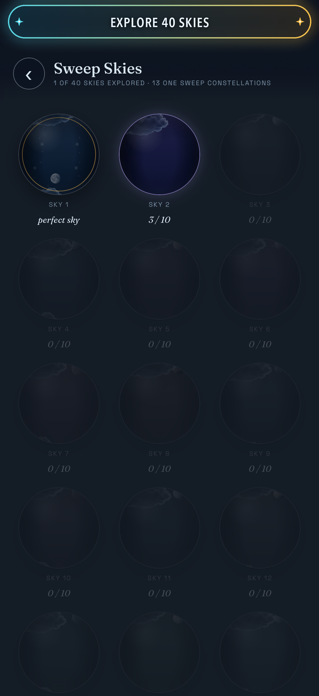
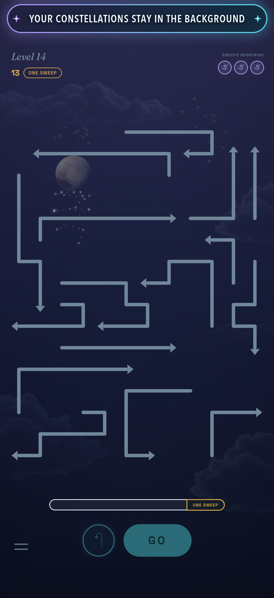

{kind=link}
{kind=link}
{kind=link}
Find your flow.
Tap or trace across arrows to build your sequence. You have three SWEEPS to clear each board.
{kind=link}

Games, ideas, and technology.
Made with curiosity. And a little Ketchup.
Our first game is coming to iPhone.
01 / THE FIRST CHAPTER
Coming to iPhoneQueue the arrows in the order they can safely leave. Press GO. Watch one move open the way for the next.
Tap or trace across arrows to build your sequence. You have three SWEEPS to clear each board.

Clear every arrow with your first GO to earn a ONE SWEEP badge. Every arrow counts.
Your ONE SWEEP finger signature becomes a constellation. A sky shaped by how you play.
400levels to untangle
40skies to explore
Your signature.Your constellation.
Submitted for App Store review. Not available to download yet.
A CLOSER LOOK
12 moments from One Sweep.
Select a screenshot to explore.








KETCHUP. CATCH UP. YOU GET IT.
We’re always catching up with technology. Learning what’s new, seeing what’s possible, and striving to make something better.
So we gave “catch up” a little flavour. Ketchup. The splash in our logo reaches like a hand, catching up with what’s ahead. It’s a bit of fun, with a real idea behind it.
One Sweep is our first game. More games and technology projects will find their home here.
Start with One Sweep{kind=link}
{kind=link}
{kind=link}
{kind=link}
{kind=link}
{kind=link}
{kind=link}
{kind=link}